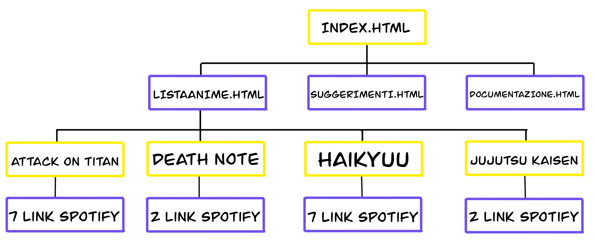
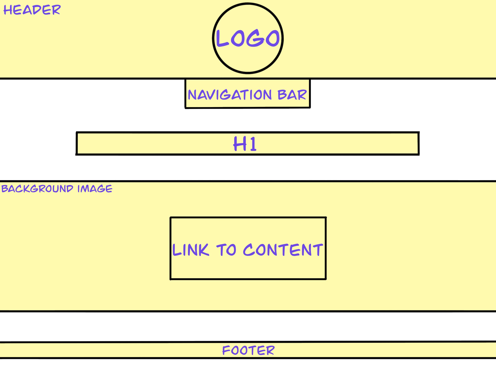
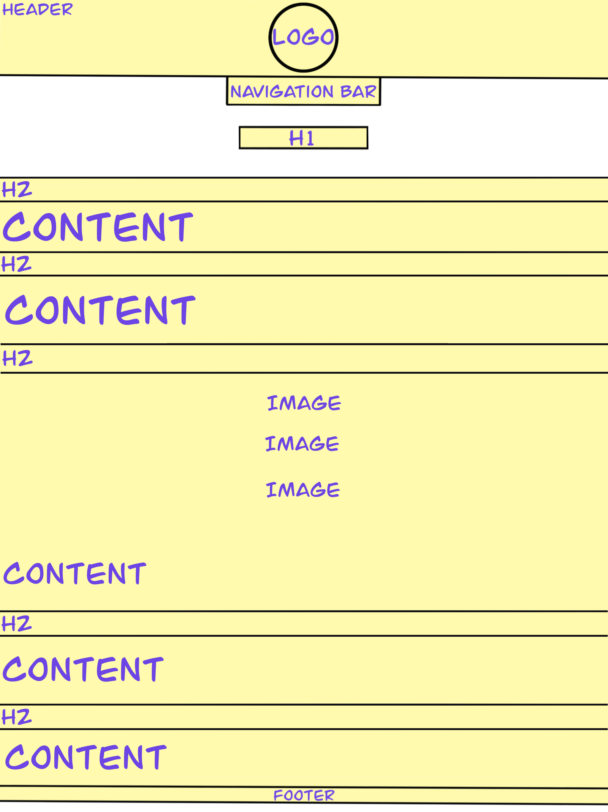

0. Abstract
Anime Music Gallery è un portare che aiuta a trovare le canzoni presenrti in un anime: con una semplice ricerca, o consultando l'elenco in ordine alfabetico, chiunque sarà in grado di accedere alle sigle in modo immediato.
1. Benchmarking (obiettivi, target, competitors)
L'obiettivo di questo sito è quello di facilitare il percorso di ricerca di tutti coloro che sono interessati alle colonne sonore degli anime.
Questo sito vuole anche essere un servizio in continuo aggiornamento e per questo motivo, nella sezione "Suggerimenti", gli utenti sono invitati ad inviarci i nomi di anime che potrebbero non essere già presenti nella lista.
I nostri competitor principali sono Anime Music e OWLDB. Il primo sito è molto valido, ma i titoli degli anime non sono in ordine alfabetico e quindi a colpo d'occhio risulta difficile individuare ciò che si cerca. Il secondo offre un servizio simile, che risulta però meno immediato in quanto non offre un link diretto a Spotify.
Il target del sito è molto ampio: sono tutti coloro che si interessano di anime e della loro musica.
2. Struttura e Layout (architettura, wireframe, look & feel)

1. Architettura del sito

2. Wireframe della Home

3. Wireframe della Documentazione
Ho scelto una palette semplice composta da due principali colori, complementari e vibranti, accompagnati da un classico sfondo bianco. Ho utlizzato uno sfondo giallo chiaro per evidenziare alcuni elementi importanti, come i titoli o la barra di ricerca.
Volevo che fosse tutto molto ordinato, quindi ho preferito avere un wireframe con pochi semplici elementi, così da facilitare la navigazione.
3. Linguaggi e strumenti
HTML, CSS, Bootstrap per la barra di navigazione, Canva per il logo, Divtable per le tabelle, Google Fonts per il font, Github per la pubblicazione e Google Analytics per le visualizzazioni.
4. Promozione e valutazione dei risultati
Il sito è stato promosso tramite la mia pagina Instagram e Whatsapp.